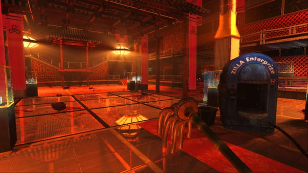
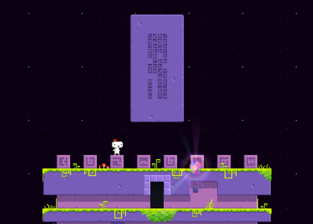

I've always been a gamer. I've always believed that due to that, I have the mental strength that I have. I think and understand better than most, normally, on a wide variety of subjects. I've spent a long time delving into and understanding games, and to that extent, I mimic that unto the world around me. I believe this to perhaps deal with the fact that games, as an artform, expresses reality in intriguing and varying ways that you won't always commonly find in your everyday life. When something new happens to my life, there is a chance I've played it out in something form or fashion in a video game before. Even being a janitor is a game.
When I was younger, I spent most of my free time gaming, much to the dismay of my parents. One day, I remember being told by my mom "Why do you play those all the time? They will never get you anywhere in life". Sure, this was before the industry was a multibillion dollar industry, but it didn't change teh fact that upon hearing that, I realized how much I wanted to prove her wrong. Sadly, I spent most of my younger years, and the beginning of adulthood, scared to make that step, it being an "unsafe" step to make as where I once lived, college was the only way.
The above image is of a game called Fez. On that block is a language, created by the developer, for players to decode to complete extra puzzles. Little did I know how exciting this would be to me, but it was one of the most memorable moments in gaming I've ever experienced. So why does this matter? Simple, this was my first taste of learning not a new language, but language as a whole. Breaking down the language, and how it read, taught me something profound. When this knowledge stopped being just a cool concept, and I was introduced to coding, I realized very quickly that writing a new language for that dev must have been incredibly simple, because they have been writing in a totally different language for years. Code, at its core, is a language. It is used to speak to computers. But, because computers are idiots, code needs to be idiot-proof. To do this, we break down reality into logic, every single step.

Learning code has created the mindset of fully analyzing how something is done in order to reproduce it. Take moving an arm for example. In real life, thats it, we think, it happens. A computer doesn't think like that however. A computer analyzes and performs every single step, starting with recognizing it has an arm, recognizing what the movement is, moving the arm to a certain point, then moving it back, making sure the action was performed correctly, then even potentially have to make sure they aren't focused on the arm anymore to do the next action.
Because of learning of all of this, my view on reality has entirely changed. Thinking things through has become commonplace now, and analyzing every step to prevent error has become dramatically easier. My mind feels entirely new, and I can look at my favorite games and understand how they were made logically, even if I don't know the code or the proper language yet. It will take time, but I'm pleased with the progress, and the skills, that I have learned. I look forward to knowing more about it all, and maybe making the next big game one day.